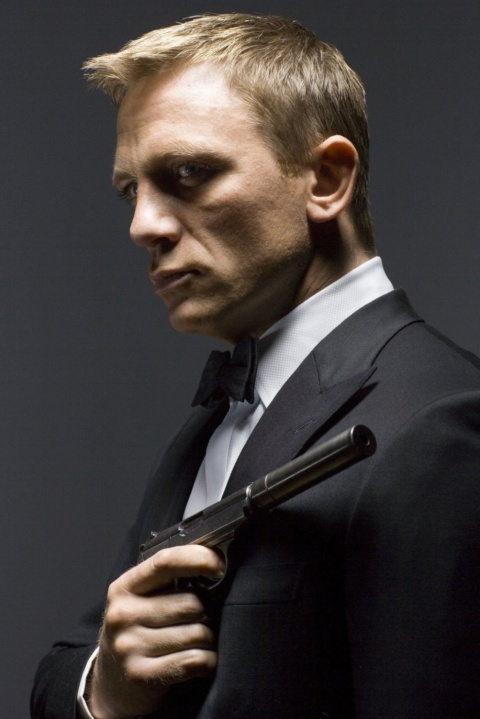

Daniel Craig

1. 간편 설명
본명은 다니엘 로턴 크레이그(Daniel Wroughton Craig)이다.
1968년 3월 2일 영국에서 태어났으며, 현재 나이는 54세이다. 배우자는 레이첼 바이스로, 딸 둘을 두고 있다.
첫 작품은 "파워 오브 원". 그 이후에도 배우로 계속 활동하다가 2006년 007 카지노 로얄에 출연하게 되면서 명성을 얻기 시작했고, 이후 틴틴:유니콘호의 비밀,
나이브스 아웃 등 다양한 영화에 출연했다. 2021년 10월, 할리우드 명예의 거리에 입성했다.
2. 필모그래피
| 1992 |
1998 |
2001 |
2004 |
2006 |
2007 |
2008 |
2011 |
2012 |
2015 |
2019 |
2021 |
| 파워 오브 원 |
엘리자베스 |
툼 레이더 |
레이어 케이크 |
007 카지노 로얄 |
인베이젼 |
007 퀀텀 오브 솔러스 |
틴틴 : 유니콘호의 비밀 |
007 스카이폴 |
007 스펙터 |
나이브스 아웃 |
007 노 타임 투 다이 |
| 황금나침반 |
밀레니엄 : 여자를 증오한 남자들 |
스타워즈 : 깨어난 포스 |
*스타워즈 : 깨어난 포스에는 카메오 출연했다.
3. 팬카페
여기로 이동하면 됩니다(회원가입 페이지)
이동하기